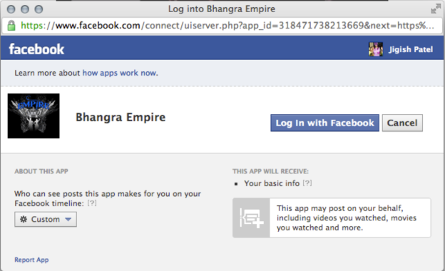

In order for videos to appear in viewer timelines, each user must accept your application.
The following describes the user login process:
Note:Each viewer only has to do this once.
-
The customer accesses your site.
-
You provide a button that the user clicks for the connected Facebook experience or you block access unless the customer logs in.
-
The Facebook Login page appears.

-
The user clicks Log In with Facebook.
Video play information is recorded to the user’s timeline.